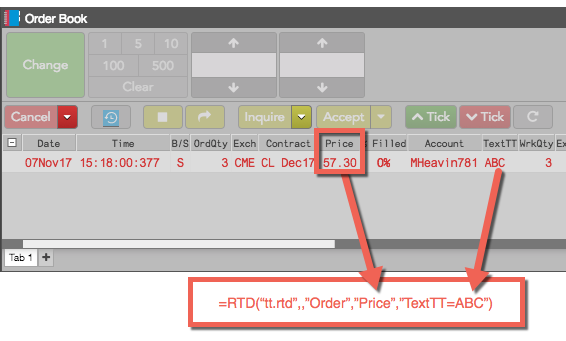
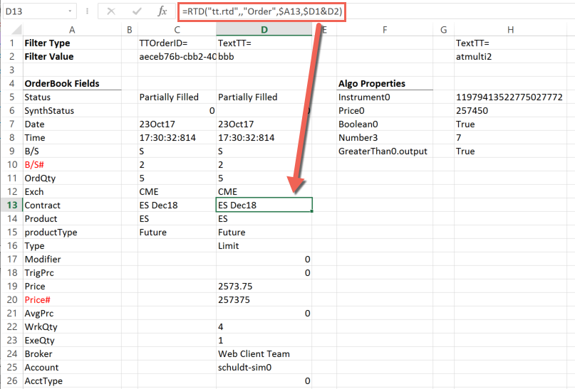
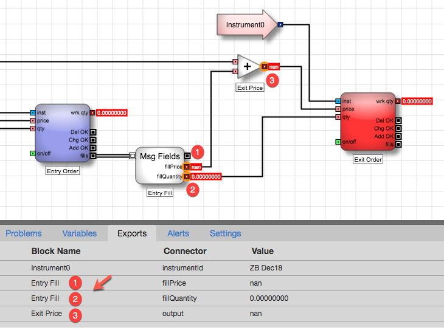

The TT RTD Server allows you to retrieve information about individual orders, such as the order properties shown in an Order Book, using an RTD formula. In the following example, the formula retrieves the value of the Price order property for the order identified by a TextTT value of ABC.

The RTD formula for extracting order information uses the following format.
=RTD("tt.rtd",,"Order",order-property,filter)
Note: The second parameter is the name of the external server running the RTD Server. As the TT RTD Server always runs locally, you must omit a value for the second parameter or supply an empty string (“”). However, you must account for the parameter in the formula.
The order-property parameter can be any property available in the Order Book columns, as well as any input and output parameters of an algo order.
Note: The name of the property must match exactly, including capitals, spaces, and special characters.
The filter parameter must identify precisely one order, using either of the following formulas:
Note: If the filter matches more than one order, the RTD formula returns an error.
For example, if you want to retrieve the Contract property of the order whose TextTT property is bbb, you need only enter the following formula in a cell.
=RTD("tt.rtd",,"Order","Contract","TextTT=bbb")
After processing the formula, Excel displays the result in the cell, similar to the following. Note that the "$" in the cell references are Excel mixed reference notations, and the & symbol joins the values of the two cells to create the string, "TextTT=bbb".
Note: Do not include the quotation marks around values in cells that you reference in a formula.

You can also retrieve the values of exported variables from ADL algos. To identify a algo variable, you specify the order-property in the form, block.connector, where block is the name of the ADL block and connector is the name of its output port.
For an input block value, include only the block name. For example:
=RTD("tt.rtd",,"Order","Instrument0","TextTT=myalgo")
For an output block value, use the name of the connector shown in the Exports tab for the variable. For example:
=RTD("tt.rtd",,"Order","Entry Fill.fillPrice","TextTT=myalgo")
Note: The names of the block and connector must match exactly, include capitals, spaces, and special characters. For blocks with only one output port, such as an Add block, omit the connector.
Suppose you want to access some information from the following ADL algo, including the exported variables are shown in the Exports tab as well as the Instrument ID from the Instrument0 input block.

To retrieve these values from the algo order, you would include RTD formulas similar to the following (notice the matching spaces and capitalization):
=RTD("tt.rtd",,"Order","Instrument0","TextTT=myalgo")
=RTD("tt.rtd",,"Order","Exit Price","TextTT=myalgo")
=RTD("tt.rtd",,"Order","Entry Fill.fillQuantity","TextTT=myalgo")
=RTD("tt.rtd",,"Order","Entry Fill.fillPrice","TextTT=myalgo")